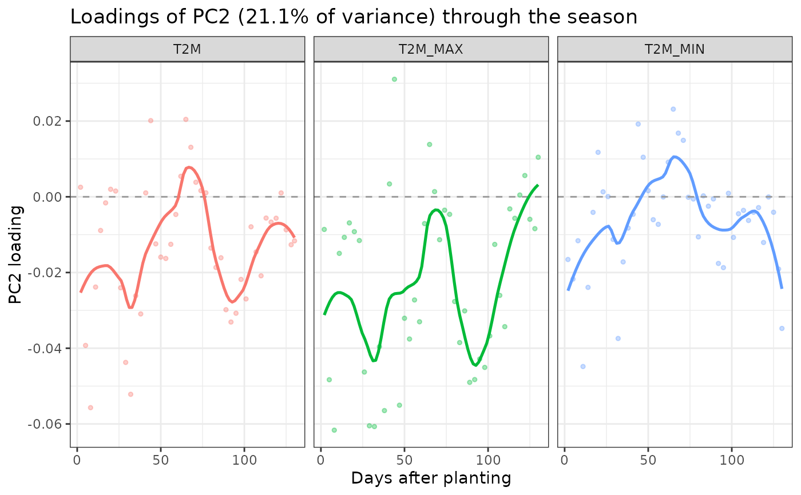
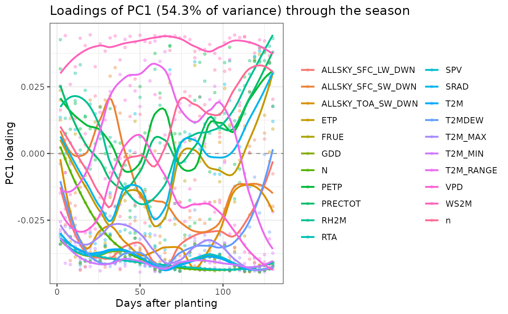

Reproduces Fig. 6c of Della Coletta et al. (2023): for a chosen PC, the loading of every index is plotted against its position in the growing season, with one loess curve per weather factor. This answers "which weather factors, at which point in the season, drive this PC".
Usage
env_loading_curve(
x,
pc = 1,
factors = NULL,
span = 0.4,
points = TRUE,
facet = FALSE,
title = NULL,
verbose = TRUE
)Arguments
- x
an
env_pcaobject.- pc
integer. Which PC to display. Default 1.
- factors
character vector. Restrict to these weather factors.
NULL(default) shows all.- span
numeric. Loess span. Default 0.4; larger is smoother.
- points
boolean. Draw the raw per-interval loadings under the curves. Default
TRUE.- facet
boolean. One panel per factor instead of overlaying. Default
FALSE.- title
character. Plot title.
NULLbuilds one automatically.- verbose
boolean. If
TRUE(default) prints a progress banner.
Value
Invisibly, a data.frame of the plotted loadings (index, factor,
day, loading), so the curves can be re-plotted or tabulated.
When ggplot2 is available the ggplot object is attached as the
"plot" attribute.
Details
Interpretation. A factor whose curve departs strongly from zero over a stretch of the season contributes heavily to that PC during that window. Sign is arbitrary up to the usual PCA reflection: only relative signs within a PC are meaningful.
Loess caveat. The smoother is cosmetic. With 51 intervals per factor the
curve is well determined, but with few intervals it can imply structure that the
underlying points do not support – keep points = TRUE to see the evidence.
Examples
# \donttest{
pc <- env_pca(env_indices(maizeWTH, end.day = 130))
#> ---------------------------------------------------------------
#> env_pca -- runs PCA on the environmental index matrix
#> Last updated at 09/27/2026
#> ---------------------------------------------------------------
#> ---------------------------------------------------------------
#> env_indices -- builds interval-resolved environmental indices
#> Last updated at 09/27/2026
#> ---------------------------------------------------------------
#> ------------------------------------------------------------
#> env_indices(): 5 environments x 21 factors x 44 intervals = 924 indices
#> interval width : 3 day(s), days 1..130
#> discarded : 106 record(s) outside 1..130
#> ------------------------------------------------------------
#> ------------------------------------------------------------
#> env_pca(): 5 environments x 924 indices
#> informative PCs: 4 (= n.env - 1)
#> PC1 54.3%, PC2 21.1%, cumulative 75.4%
#> ------------------------------------------------------------
## All factors on one panel
env_loading_curve(pc, pc = 1)
#> ---------------------------------------------------------------
#> env_loading_curve -- plots seasonal PC loading curves
#> Last updated at 09/27/2026
#> ---------------------------------------------------------------
 ## Temperature factors only, one panel each
env_loading_curve(pc, pc = 2,
factors = c("T2M", "T2M_MAX", "T2M_MIN"), facet = TRUE)
#> ---------------------------------------------------------------
#> env_loading_curve -- plots seasonal PC loading curves
#> Last updated at 09/27/2026
#> ---------------------------------------------------------------
## Temperature factors only, one panel each
env_loading_curve(pc, pc = 2,
factors = c("T2M", "T2M_MAX", "T2M_MIN"), facet = TRUE)
#> ---------------------------------------------------------------
#> env_loading_curve -- plots seasonal PC loading curves
#> Last updated at 09/27/2026
#> ---------------------------------------------------------------

## Recover the plotted values
L <- env_loading_curve(pc, pc = 1)
#> ---------------------------------------------------------------
#> env_loading_curve -- plots seasonal PC loading curves
#> Last updated at 09/27/2026
#> ---------------------------------------------------------------

head(L[order(-abs(L$loading)), ])
#> index factor day loading
#> 183 WS2M_i007 WS2M 20 0.04448909
#> 105 T2M_MIN_i017 T2M_MIN 50 -0.04447220
#> 41 T2M_i041 T2M 122 -0.04445100
#> 21 T2M_i021 T2M 62 -0.04441417
#> 212 WS2M_i036 WS2M 107 0.04440611
#> 657 GDD_i041 GDD 122 -0.04438772
# }